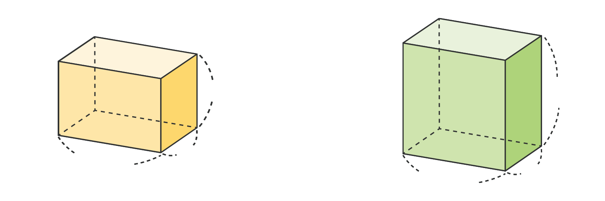

- 문제 1
- 문제 2
- 문제 3
- 문제 4
- 문제 5
-
부피가 큰 직육면체부터 차례로 써 보시오.
가나다다, 가, 나 -
부피가 더 큰 직육면체는 무엇인지 구하고, 그 이유를 써 보시오.
 ㄱ ㄴ6 cm
3 cm
4 cm
6 cm
3 cm
6 cm
부피가 더 큰 직육면체ㄴ이유예ㄱ과 ㄴ직육면체는 가로, 세로 길이가 같기 때문에 높이를 비교하면 됩니다. ㄱ직육면체의 높이가 4 cm, ㄴ직육면체가 6 cm로 더 크기 때문에 ㄴ직육면체의 부피가 더 큽니다.
-
두 상자에 모양과 크기가 같은 벽돌을 꼭 맞게 넣었더니, 가 상자에는 16개, 나 상자에는 20개까지 넣을 수 있었습니다. 둘 중 어느 상자의 부피가 더 큽니까?
가
나
상자나 -
직육면체 모양의 상자 안에 쌓기나무를 담으려고 합니다. 가장 많이 담을 수 있는 상자 순으로 써 보시오.
가나다나, 다, 가 -
크기가 같은 쌓기나무로 다음과 같이 직육면체를 만들었습니다. 두 직육면체의 쌓기나무 수를 각각 구해 부피가 더 큰 직육면체를 찾아보시오.
가나개24개27부피가 더 큰 직육면체나